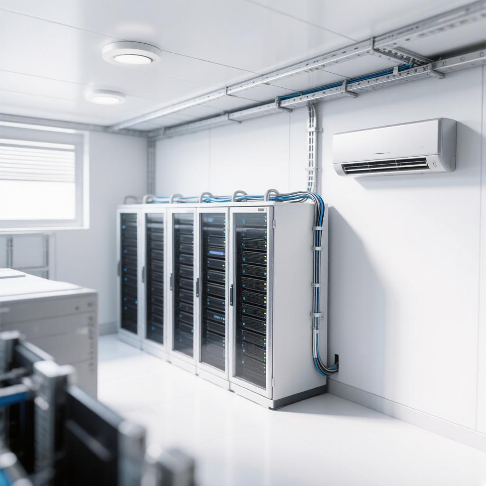

Модель физической защиты серверной комнаты

Расшифровка элементов защиты на схеме:
- Датчики пожарной сигнализации: Расположены на потолке непосредственно над серверными стойками для быстрого обнаружения задымления.
- Система кондиционирования: Мощный промышленный блок установлен на правой стене для оптимизации направления потоков холодного воздуха.
- Кабельные трассы: Защищенные металлические короба проходят под потолком, изолируя силовые и сетевые линии связи.
- Серверные стойки: Оснащены замками контроля доступа и индивидуальным заземлением.
Пояснение важности систем защиты:
Поддержание строгого температурного режима необходимо для предотвращения перегрева высокопроизводительного серверного оборудования, который может привести к сбоям или выходу компонентов из строя. Защита от пожара с помощью современных систем обнаружения и газового пожаротушения критически важна, поскольку обычная вода уничтожит электронику. Своевременный контроль среды гарантирует непрерывность бизнес-процессов и сохранность данных информационных систем.